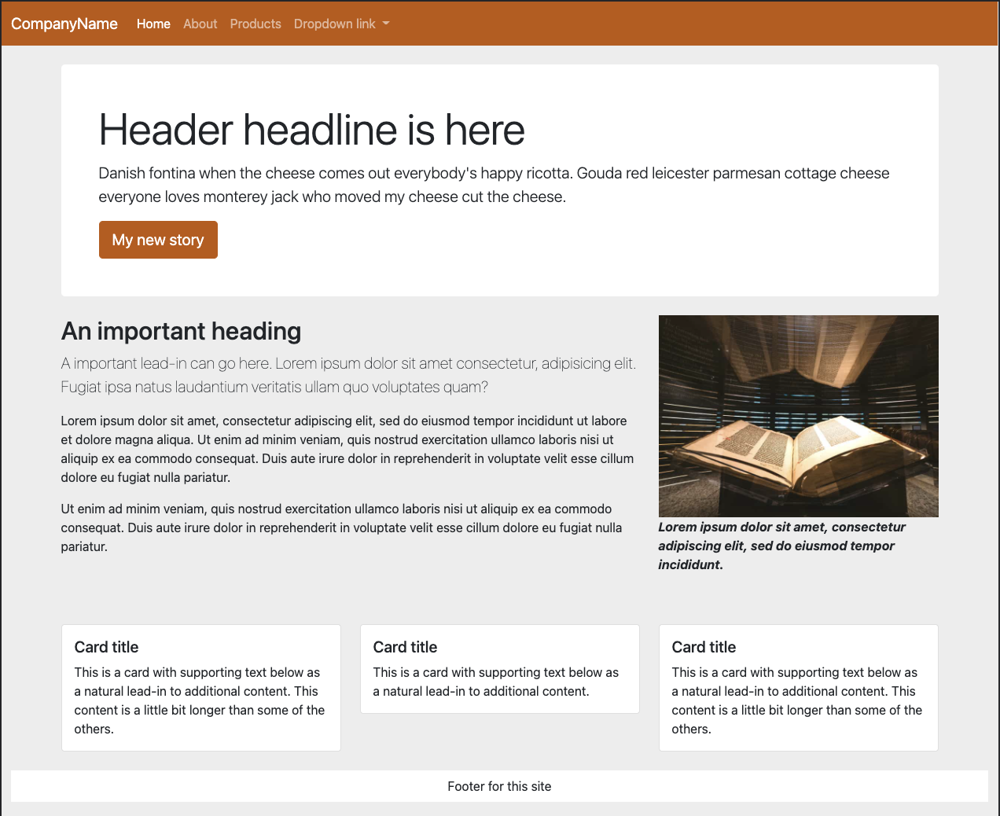
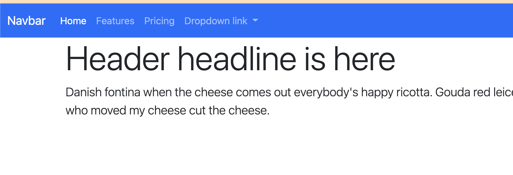
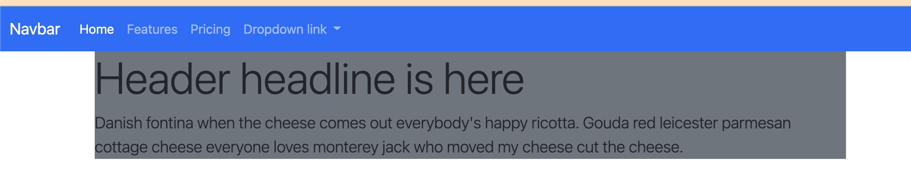

18 Bootstrap Components
This is a continuation of the Bootstrap tuorial.
We’re going to explore many parts of the Bootstrap documentation, using Components, Content and Utilities classes to build a very generic single-page website.
Here is our goal, a page like this:

We’ll be pulling code from Bootstrap documentation and examples to build these pages. In some cases we aren’t even updating the example text, we’re just getting the components on our pages.
We’ll start at the top of the page with a very common element to almost every website: Navigation.
18.2 A Jumbotron site header
Once upon a time (like 2021) Bootstrap had a special header component called a Jumbotron. With Bootstrap 5’s release in May 2021 they got rid of it because you can build a similar display with their existing utility classes, which allows us to introduce Bootstrap examples along with content and utilites classes.
First let’s take a look at what we are talking about.
- Go to the Bootstrap Examples page. You can get this from any Bootstrap Docs page in the navigation item called Examples.
Now, these examples aren’t quite as easy to use as the Component documentation. To see how they work you have to either download the examples (which gets you all of them) or view the source code of each page (In Chrome, View > Developer > View Source.)
Instead, we are just going to build this bit-by-bit. But I did want you to see the examples so you know our goal.
- After your nav, add a new
divwith aclass="container". - Inside that div, add another
divwithid="header". - Inside the header div add an
h1tag and aptag and put some text in both. You can use VS Code lorem or maybe try a little cheese ipsum.
It should be something like this:
<div class="container">
<div id="header">
<h1>Header headline is here</h1>
<p>Danish fontina when the cheese comes out everybody's happy ricotta. Gouda red leicester parmesan cottage cheese everyone loves monterey jack who moved my cheese cut the cheese.</p>
</div>
</div>Let’s talk about that container. In Bootstrap, a container div applies some margins and puts the content in the center of the browser. It’s an important building block with responsive design because those margins expand/contract depending on your device width.
The rest of that:
- We created a div with an id of
headerbecause it will be a unique item on the page. Giving it an id let’s us target CSS styles to that part of the page if needed. - The
h1andptags are standard. For now. We’re about to gussy ’em up.
We will be doing a tour of Bootstrap content and utilites class as we go along.
18.2.1 Typography classes
Let’s gander at Bootstrap’s Typography documentation. These are a set of classes that can be applied to elements that give them a certain look. Because Bootstrap is customizable, it is possible to set these classes and then update them later with Sass. We’re going to stick with default styles for now.
- Look through the Display headings section to see how to apply the
display-4class and add that to yourh1within your header. - Look at the Lead section and then add that class to your
ptag within the header.
At this point your index should be looking something like this:

18.2.2 Backgrounds
We’re going to add some color to our Jumbotron-like header using a background color. The Background classes are found in the Utilities part of the documentation.
- Browse through the Backgrounds docs so you can see how they are used.
- On the header div, add the class attribute to make the background our “secondary” color (the default whis is a dark gray color).
<div id="header" class="bg-secondary">That should yield a result like this:

Still ugly, but we are getting there.
18.2.3 Colors
Next on the tour are utility classes to control text colors.
- Look through the color documentation and figure out how to make white text.
- Add that class to the same div that you added the background color, so it look like this:
<div id="header" class="bg-secondary text-white">Still ugly, but you should have white text on the dark gray background.
18.2.4 Spacing classes
Next we’ll give our text some room to breathe using utility classes to control spacing between elements like margins and padding.
Basically this shorthand to build space around items (margin) and inside items (padding). While I can’t explain it better than they have, here is an abbreviated version of the shorthand:
- You use
mfor margin orpfor padding. - Following m or p you add either:
t(top),b(bottom),l(left),r(right),x(left and right),y(top and bottom), or nothing for all 4 sides. - Then, you specify sizes with a hyphen and a value of
0through5(5 being the largest amount of spacing).
So, pt-4 would be padding on the top at a value of 4.
We’ll use this on our header. Let’s add the code first then I’ll explain.
- Add these as a
class=""to the header div. (If you do this one at a time you can see what each does):my-4adds a margin to top and bottom of the div, basically moving it off the navigation.p-5adds padding, the space “inside” the div between the border and the text.
18.2.5 Borders
You set the color, width, style and radius of borders with various border classes. Let’s use those to add a slight radius to our header corners.
- Review the border-radius docs and add the class to your header div to make the corners of the box rounded. It’s a pretty slight visual change.